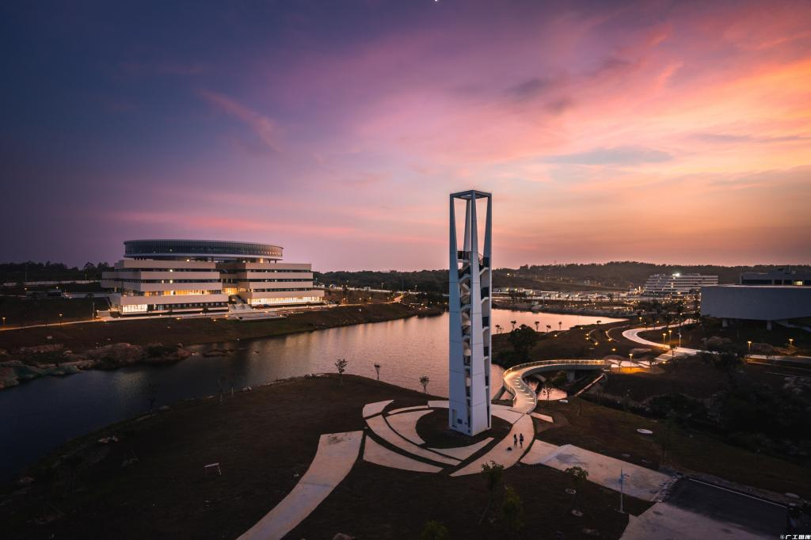
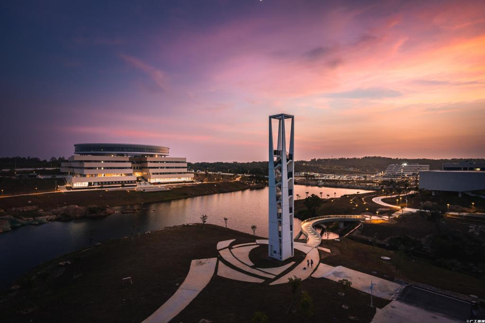
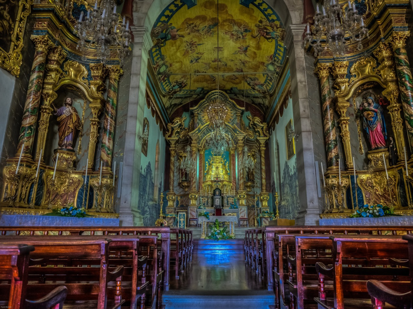
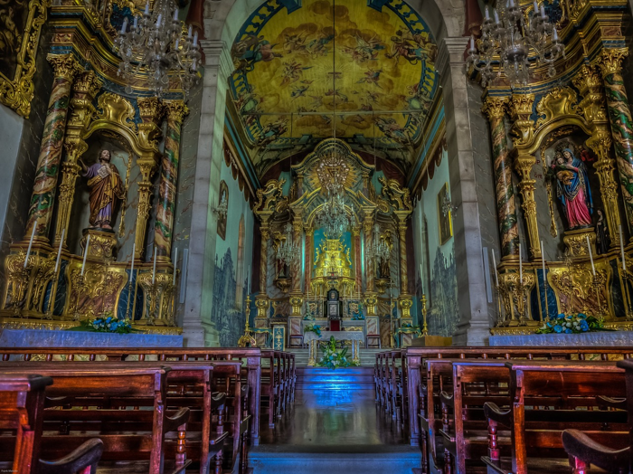
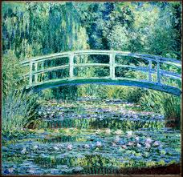
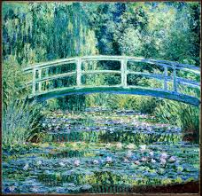

Image Style Transfer
欢迎使用图像风格迁移工具！
只需简单的操作，便能让大师的艺术风格融入你的图片或视频中！
快来生成你专属的风格图片吧！
Examples
 

How to Use
只需以下的操作，便能让大师的艺术风格融入你的图片或视频中：
- 选择要上传的图像或视频文件。
- 从下拉菜单中选择样式模型。
- 单击"Apply Style" 按钮。
- 下载转换后的图像或视频。
Style Models
我们提供了以下风格样式供您选择:
-
Cuphead:
 Church: 
Starry Night:
Church: 
Starry Night: 
-
Sketch:
Mosaic:
 Monet: 
Monet: 
Transform Your Images and Videos Now!
{% if image %}
 }}) {% endif %}
{% endif %}
Styled Image:
Choose an video and a style to apply:
{% if gif %}
 }}) {% endif %}
{% endif %}
Styled Video:
用户评价
"我很惊讶使用这个工具转换我的照片是多么容易。结果令人惊叹！"
- John Doe, Photographer
"我喜欢风格模型的创造力。每个人都能找到适合自己的东西！"
- Jane Smith, Artist